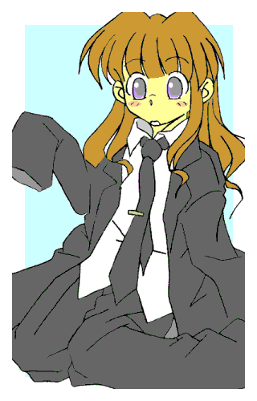
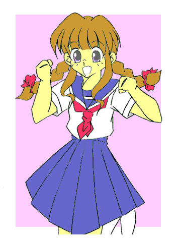

戻る
春、晴れた日。ある寺にて。
黒い……喪服の男たちが大挙して墓を囲んでいた。
その中心にはやはり喪服の男。
歳は４２。背はやや高め。がっしりとした体格、浅黒い肌。そこまでならともかくオールバックで鋭い眼光。
そして只者ではない雰囲気を漂わしていた。
囲んでいる男達も普通のイメージではない。
彼らは『やくざ』だった。
線香の煙が漂う墓前で手を合わせていた男は、静かに立ち上がると低い声であたりの男たちに言い渡す。
「これで一区切りついた。俺は悪いことは一通りやってきたが、殺しだけはしなかった。……だが、それも今日限りだ。てめぇら、明日にも殴りこみに行くぞ」
「へいっ」
ヤクザの男たちはいっせいに返答する。
「やってやりましょう。姐さんの仇」
「帝江州組に楯突くとどうなるか、非力組のやつらに思い知らせてやりやしょう」
「弔い合戦でさぁ」
慕われていたのも事実だが、これを口実に対抗組織との抗争が激化したとも取れる。
「よく言ってくれた。あの世でアイツも喜んでくれるだろう」
（よろこぶわけないでしょう）
「ん？」
帝江州組組長・銀次郎は、だしぬけに聞こえてきた声に辺りを見回した。
「サブ、何か言ったか？」
傍らの腹心に尋ねる。
「いいえ、別に」
細長いメガネの若頭、サブは首を横に振る。ヤクザと言うより銀行員に見えるインテリ派である。
「空耳か……まぁいい。いいか、てめーら、例え刺し違えてでもアイツの仇をとるぞ」
「おーっっっっ」
気勢の上がる一同。だがまた『声』が
（だからやめなさいっての。あんたを庇って死んだあたしの立場がないでしょう）
「空耳じゃねぇ！？ 千代っ！ 千代なのか？」
死んだ妻の名を呼び、銀次郎は辺りを見回す。
「あ、姐さん？」
どうやらサブたち何人かには同じ声が聞こえたのか、同様に見回している。さらに『声』が続く。
（……決めたわ。あんたに足を洗わせるにはこうするしかないようね）
突然、銀次郎は全身がきしむような激痛を覚えた。
「う……うぉあっ！！」
思わず両手で自分の体を抱きしめる。
「「親分！？」」
動揺する子分たち。何人かはあたりのビルをとっさに見る。狙撃ポイントだ。……だが血は流れていない。銃声もしていなかった。
子分たちの見守る中、がくっと膝をつく銀次郎。オールバックの髪が爆発的に伸びていく……男のごわごわした髪ではなく、さらさらとした柔らかい髪が。
肩幅が縮まり、背丈も縮み、肌の色も白くなっていく。
「こ……これは一体？」
そしてとうとう、子分たちの見守る中で銀次郎は、華奢な美少女の姿になってしまった。
美少女組長奮戦記
作：城弾
とりあえず本堂へと場所を移す。銀次郎含め狼狽する者たちの中で、サブ以外に冷静な人物がいた。
「ほほう、こりゃあまた……面妖なこともあるものじゃな」
その冷静な人物………悟ったと言うべきか……寺の住職、貴漢坊はにやりと笑う。
「うーっっっっ」
目の前には、すっかり可愛らしくなってしまった銀次郎。口を尖らすからなおさらだ。どっかと胡坐をかいている。
つぶらな瞳、長いまつげ。女には使わない表現だが童顔。いかにも子供。

身長は１７８センチから１５２センチへと。
体重も７７キロから４２キロへ。
上から７８（Ｂカップ）、５５、８０だった。
雪のように白い肌はシミ一つない。
細く高い、そして愛らしい声は元の声からかけ離れすぎている。
腰まで達する黒髪が艶やかに流れる。
元の姿のときに着ていたワイシャツが、そのまま腰まで覆っている形だ。
ズボンは腰周りが違いすぎてヒップにさえ引っかからない。
……見ようによっては悩殺スタイルだ。
「どこからどう見ても美少女だな。わぁっはっはっは」
豪快に笑い飛ばす貴漢坊。恥辱に打ち震える美少女組長。
切れたのは当人より配下が先だった。
「ヤロウ、親分をコケにする気か？」
「許せねぇ」
「ぶち殺す」
いきり立ち、寺だと言うのに刃物を手にする。
「ば……馬鹿、やめろ！ オメーら程度が叶う相手じゃ……」
すでに遅し。チンピラ三人は住職に突っかかっていった。
……だが、
「凄舞雷音珠」
「ぎにゃあああああっ！！」
数珠を手にした貴漢坊の舞いが作り出す雷に感電。
そして……
「千波六手真理院手」
「ぶぁあおおおおおおおおおっっっっ！！」
嵐のように拳を見舞われる。まるで阿修羅の攻撃。
さらに……
「福陸大栄砲久住」
「あんぎぉあああああっ」
気を砲弾として打ち出す荒業。
必殺技のオンパレードで全員葬られていた。
「……だからいわんこっちゃねぇ。和尚に勝てる奴なんざいねえんだ……それでここは中立地帯になっているんだしよ」
精根尽き果てたチンピラたちは聞いてなかった。悶絶した彼等を修行僧たちが運んでいく。
「しつけがなっとらんな。しばらくこの寺で預かるとしよう」
（仏門入りかな……また）
無礼を働いたものは強制的に剃髪され、修行させられる。
この修行僧たちも、実は銀次郎のかつての配下だったりする。
「話を戻すか。これは恐らく御仏の慈悲、あるいはおぬしの亡き妻のそれかもな」
「……この仕打ちがかよ？」
丁寧に喋ればお嬢様で通りそうなイメージの、綺麗な声である。乱暴な口調がまるでしっくりこない。
「うむ、このままではおぬしはいずれ、悪鬼羅刹となろう。だがその姿ではそれもままなるまい。
……どうじゃ？ いっそこのまま人生をやり直してみれば？ 真人間になる機会ぞ。それこそが奥方の望みと見たが？」
「冗談じゃねぇ。男で四十を過ぎてから、どうして小娘でやり直さなきゃいけねぇ！」
「だが、どうやって元に戻るつもりじゃ？」
「う……」
相手がオカルトとなると……さすがに手の打ちようがない。
「女性（にょしょう）がいやなら足を洗うしかないな。そうすれば奥方もその呪いを解いてくれるやもしれん。このまま男でヤクザを続けさせると、いつかは破滅する。女でヤクザをしていくのはなお難しかろう。だが、真人間になれば破滅は免れる。死するより例え女でも生き永らえて欲しい……とな」
つまりこのまま女として人生をやり直すか、それとも足を洗うか。どちらにせよヤクザではいられないようだ。
解決策は見つからない。仕方ないのでとりあえず引き上げとなる。
車に向かうときだ。トレンチコートの冴えない初老の男が歩み寄る。
刺客ではない。だが友好的には出来ない相手で、露骨に態度に出す黒服たち。
「よぉ、帰りか？」
「ええ、松沢さんも引き上げですね」
冷静に対処するサブ。
「ああ。……ったく、やっちゃんが墓参りとなると付近の住民も怖がるんでな。出張らないわけにもいかんよ」
所轄の四課、暴力団対策の刑事だった。もちろん寺の周辺は制服警官が並んでいる。
「……ところで親分はどうした？ 姿が見えないが」
実はいたのだ。小柄になったために男たちの陰に隠れてしまっている。
「どこに目をつけてやがる？ 組長ならここにいるだろうが」
血の気の多い若いヤクザが揶揄されたと思い込み、つい怒鳴ってしまう。
（馬鹿野郎……っ）
銀次郎が思ったときは遅かった。組員たちの影に隠れていた少女を「組長」と口走ってしまったのだ。
「……おい。どっかから拉致してきたんじゃねぇだろうな？ この娘さん」
その言葉にやっと自分の失言を悟るチンピラ。……慌てて言いつくろう。そしてさらに墓穴を掘る。
「ち……違う。『組長』って言ったんじゃねぇっ！ 『久美ちゃん』って言ったんだ！！」
（…………殺す……っ）
青筋が浮き出る「久美ちゃん」。そうとは知らずに松沢刑事はのんきに雑談を続ける。
「ほう、久美ちゃんか。可愛いお嬢ちゃんだな。……誰の身内だ？ それにしても色っぽい格好だな」
住職には年頃の娘がなかったため、服が調達できなかった。仕方なくそのままシャツだけの悩殺スタイルで、組まで戻るつもりだったのだ。
代々続くヤクザの一家。それが関東帝江州組だ。
本拠もビルの事務所などでなく、和風の屋敷である。
そこに黒塗りの車が帰ってきた。掃除をしていた若い衆たちが、列を作り出迎えた。
「お帰りなさいませ、おやぶ……？？？？」
口をあんぐりとあけるのも無理はない。出て来たのはワイシャツ一枚だけの美少女だったからだ。
その美少女……変わり果てた銀次郎は、男たちの突き刺さる視線に耐えながら屋敷に入った。
頬を染め、うつむきながら歩く。ちなみに２６センチの革靴はぶかぶかで、小さな足にサンダルのように突っかけていた。
その姿に、「アレは誰か？」より、「なんて可愛い女の子だ」と話題になったのは言うまでもない。
「指、詰めな……」
組に戻りつくなり銀次郎は冷たく言い放つ。もちろんさっきのチンピラにである。
「く……組長」
「やかましいっ！ 誰が久美ちゃんだっ！？ 赤っ恥かかせやがって！ 指を詰めて侘びいれろ」
（あんたっ、そんなことをいうのかい！！）
今度は墓で声を聞いた面々以外にも、千代の声が聞こえた。
「あ……姐さん？」
きょろきょろと辺りを見回す組員たち。死者の声が聞こえてくればもっともだ。
（……仕方ないね。意地っ張りだから、あたしが許させてあげるよ）
「千代、何を……」
次の瞬間、銀次郎は突然、変な気持ちになる。
なんだか女でいることに違和感がない。
そう、一時的に心まで女に……それも１５の小娘の心になってしまう。
彼女は土下座しているチンピラの手をとった。優しく、その柔らかい両手で包み込むように……
「……顔を上げてちょうだい。許してあ・げ・る♪」
笑顔でにっこり。可愛くにっこり。
まるで生まれついての女の子のように、愛らしく微笑む。
「く……組長ぉ？」
思わぬ展開に驚きと、許されるかもしれない期待が入り混じる。
「いやんっ、組長じゃなくて、『久美』って呼んで。……ステキな名前をつけてくれて、あたしとっても嬉しいわっ♪」
「それじゃ指は……」
「そんな野蛮な事しちゃダ・メっ。許してあげるって言ったでしょ、ねっ？ ……それからみんなも、これからはあたしのことを『久美』って呼んでね♪」
両腕の拳を顎に当て、可愛らしく言い放つ。
「……聞いたか？ 親分じきじきの頼みだ。これからは『久美さん』とお呼びするんだ」
「へいっ、若頭」
許されたチンピラを先頭に、組員たちは一礼して部屋をあとにする。それをニコニコ見送っていた「久美」だったが……
「はっ？ オレは今、何を？」
「どうやら姐さんに、心の中まで女にされてしまってたようですね……」
冷静に分析するサブ。しかも久美には女心の時の記憶がきっちり残っていた。
「な……なんて言葉遣いで……男を極めるはずのオレがあああ……っ」
省みると猛烈に恥ずかしくなってきた。
許してしまったものは仕方ない。とりあえずそいつを服の調達に向かわせた。しかし、暫く待って届いた服は……
「おい……なんで『セーラー服』なんだよ？」
「へい、さすがに洋服屋で女物を買うのはこっぱずかしいんで、ブルセラで買ってきやした」
久美としては生地や構造は女向けでも、デザインはもっと中性的なものを期待していた。
しかしこれでは逆に女の記号が、さらにしっかりと……
「オレに……これを着ろと……」
しかし、ここでまたキレると、また亡妻に少女の心にされてしまうかもしれない。
あんな恥ずかしい思いはもうたくさんだ。
かといってまわりはみな大柄な男たち。無理に借りたとしてもサイズの合うものはない。仕方なく白い夏物のセーラー服を着る羽目に……
和風ヤクザの屋敷に、セーラー服の美少女というのもなかなか妙な取り合わせだった。
さらに言うと、女ッ気のない暮らしをしてきた面々。
そんな中にまぶしい肌を惜しげもなくさらした脚線美。
「はわわわ〜〜」
刺激が強すぎた。
「これでいいのか？」
「「へいっ。とても可愛いですっ、久美さんっ」」
「…………」
苦虫を噛み潰した表情の久美。「操られて」と言えど、そう呼ぶのを自分で許可したのだ。翻せない。
とりあえずそれは我慢しておくとして……しかし、わざわざつける必要のないセーラータイまでつけるのは？
「……こんな感じかな？ おい。鏡ないか？」
「鏡だっ、姿見持ってこいっ」
「曇りがあるならとりのぞけっ」
「おい、櫛かブラシもついでに持ってこいっ」
……大騒ぎだった。
（気のせいか……いつもの怒鳴りつけたときより、反応がいいような……）
そんなことを考えているうちに、目の前に姿見が運び込まれる。
「どうぞっ」
「お……おう」
恐る恐る鏡を見る。そこにはどこの学校にもいそうな、普通の少女がいた。
ただ顔の形の整い方が、並み以上だった。白い肌、健康的な頬の赤み、みずみずしい唇……
（これが今のオレの顔か…………情けねぇ。髪もぼさぼさだしよ……）
無意識に髪をいじってしまう。
そのタイミングを待っていたかのように、若いヤクザがブラシを持って駆けつけた。
「失礼します。久美さん、髪を整えさせていただきます」
「あ……ああ、やってくれ」
「久美」と呼ばれて一瞬怒鳴りかけたが、髪を整えてくれるというのでしぶしぶ我慢。
背の高い若いヤクザ・上谷は、久美の長い髪を丁寧にとかしていく。
（あ……なんか気持ちいい……）
髪の毛がすっと通るたびに、なんとなく気持ちよくなっていた久美。
やがてその表情は、年齢に似合わぬアンニュイな色気のある表情に変わっていく。
「……さぁ、出来ましたよ」
言われて我に返り、改めて鏡を見る。
長い髪が三つ編みにされていた。そして髪の先には真っ赤なリボンが。
「……いかがです？ 久美さん」
「バカ野郎っ！！ 誰がここまでやれと……きゃーっ可愛いぃ♪ ありがとうっ。……ねえ、これからあなたにあたしの髪の毛を任せていいかしら？」
「へいっ、喜んで！」
そのまま鏡の前で、嬉しそうにいろんな角度から自分の髪型をチェックする久美。
そして……
「はっ？ ま……またやっちまったのかっ？」
白い肌を桜色に染めて蹲る。その様子を隠れていた子分たちが、生暖かい目で見守っていた。
（か……可愛い。親分……なんて可愛いんだっ）
（前はいま一つついていけないところもあったけど、今の久美さんなら一生ついていきますぜっ）
（萌えーっっっ！！）
別な意味で、新たに忠誠を誓っていた……
都内某所。暴力団事務所。
「帝江州の様子はどうだ？」
上等な、“すかした”デザインの服を着こなした男が、ソファにふんぞり返って尋ねた。
「動きはありません……と言うか、何かトラブルがあったのか、組員全員浮き足立ってます。
……それに組長の銀次郎がどこに雲隠れしたのか、墓参りからまるで姿を見せません」
「ふん、逃げたか？ それでもいいがな。……この非力組がやつらのシマを貰ってやるぜっ」
関西系暴力団・非力組。ここが帝江州組の抗争相手だ。
男は先代の息子、若干２７歳の凱（かい）。穏健派の先代が死んで跡を継ぎ、一気に関東侵攻……と、帝江州組に矛先を向けているのだ。
凱が送り込んだ刺客……鉄砲玉は銀次郎を拳銃で狙ったが、狙いがそれて傍らにいた銀次郎の妻・千代を射殺。銀次郎の怒りを恐れた刺客はその足で警察に自首。そして非力組からの口封じを恐れて、取り調べには「自分の勇み足」の一点張り。
確かに刑務所なら安全だ。
亡妻を弔ってからひと段落のついた時点で、帝江州組が何か「報復」をしてきても不思議はない。むしろ、それがないのが不思議だった。
「まぁいい。もう少し様子を見るか……監視を怠るな」
「はい」
朝。
当然だが男物しかないので、その中でも比較的柔らかい下着、そしてＴシャツをパジャマにして眠っていた久美が目を覚ました。
ぼーっとした焦点の定まらない瞳で辺りを見回す。鏡に映る自分の顔を見て一瞬驚き、そしてため息をつく。
（夢じゃねぇのか……しかし、本当に小娘だな。まいったな……パンツもだが胸元も落ち着きゃしねぇ。……しょうがねぇ、元に戻るまでの辛抱だ）
「誰かいねぇか？」
可愛らしい声で怒鳴ると、十人くらいがいっせいに駆けつけた。
（…………まさかそこここに潜んでいたんじゃないだろうな……）
そう思いつつも、あることを（頬を赤らめながら）命令する。だが、
「てめえ……オレの命令が聞けねぇってのか？」
すごんで見せてもファニーフェイスに少女の声。だが目の前の男たちは、ひたすら平伏していた。
「すいやせん親分っ。他のことなら何でもします……非力組の組長のタマ（命）とってこいってんなら、喜んで鉄砲玉になりましょう。粗相を侘びろと言うなら指を詰めます。
ですが……「女物の下着を買ってこい」と言う御命令だけはどうか御勘弁を」
「じゃあなにか？ オメーはオレ自ら女物のパンツを買いに行けと言うのか？」
「いえ、その心配は要りません」
三十後半くらいの美女を連れて、サブが入ってきた。
とにかく大きな胸が目立つ女だった。泣きボクロが色っぽい。
「サブ……それにアンタは確か？」
「三郎の妻、寿音（ことね）です。お久しぶりです……って、お話は伺いましたけど、ほんとに親分さん？」
「あ……ああ」
「か……可愛いっっ！！」
いきなり寿音は久美に抱きつき、その頭を豊満な胸にうずめてしまう。
「う……うぐぐっ！！」
「あーん、なんて可愛いのかしら。……うふふふふ、こんな綺麗な娘（こ）のお世話が出来るなんて幸せっ。さぁ、綺麗になりましょうねぇ♪」
妖艶に笑う寿音。すごんで刃物を振り回す男は慣れていても、こういう相手の対処法は全く分からない。
「ぷはぁっ。お……おい、サブ、どうしてここにお前の嫁さんがいるんだ？」
「何しろ男所帯ですからね。今の親分の世話役は、やはり女の方がいいかと思いまして。それから下着の調達などもしてもらおうかと」
「なるほど。……それはさておきお前の嫁さん、どうにかしろっ」
なんとか窒息から逃れた久美は、腹心に怒鳴りつける。
「……難しいですね。何しろ『百合』ですから」
「なにぃ？」
「何しろ三度の飯より女の子が好きと言う人なんで、それだけに大事に扱ってくれるでしょう。痒い所にも手が届くと思います」
「それはいいが、な……なんで百合女が男と結婚してるんだよ？」
「いえ、実は私が『薔薇』なんで……」
「……な！？」
衝撃のカミングアウト。冗談とは思えない表情。
「所帯持ちと言うと、何かと相手の安心を誘えましてね。それで一緒になってます。いわば偽装結婚ですな。……ですから今の親分の姿にも劣情を催したりしませんので、御安心を。……はぁ、まったく残念です。いつか男同士、裸で杯を交わすのを夢見ていたのですが……」
ぞくぅ〜〜〜。じ……じゃあ、肉体的に可能な今となっちゃ…………
思わず両腕で胸元を庇う久美。
「ああ御心配なく。繰り返しますが、今の親分にはそんな気が起きませんから。それに組員たちも、『小娘じゃなぁ』と思うものと、『可愛いお嬢ちゃん……はぁはぁ』と、恐れ多くて手の出せないと……どちらにせよちょっかいをかける奴はいないようです。中には『育ちすぎてて興味がない』と言う奴もいるようですが」
「…………」
「……話を戻しましょうか。私と寿音は互いに相手を認めてますので、『男と女』と言うより『同胞』ですね。だから世話役として私が一番信用できる女です」
「確かに……毒なんか盛ったりしないだろうが——」
別な意味で危ないんじゃないか……そう言いかけたが、寿音自身にさえぎられた。
「下着を買いに行くんですね？ ……でしたら体を隅々まで洗いましょうね。汚れていたら恥ずかしいですからね。女の体の洗い方は手取り腰とり教えて差し上げますから。
……さぁ。皆さん。お風呂を沸かしてくださいな」
「へい。とっくに沸かしてありまさぁ」
「あら、気が利くわね。さすがはアンタの下でやってる人たちだわね。……さぁさぁ親分さん、早速入りましょう」
「やめてぇぇぇぇぇぇ」
抵抗むなしく風呂場に連れて行かれ、全て剥かれてしまう久美であった。
風呂場にて。当然だが二人とも一糸纏わぬ姿。
「あら親分、綺麗なお肌」
「そ……そうかい。あ、アリガトよ」
警戒心バリバリの久美。この時点では『同性』だが、気は許せない。
（しかし……すごいな。生唾物だぜ……このスタイル……）
三十代と思えない寿音のプロポーション。
「この胸ですか？ うふふふ。女の子と揉み合っている内にこんなになっちゃって」
（ああああっ。そっち系は本当かよ……今すごくやばいんじゃないか、オレ？）
何気なしに鏡を見る。そこに映るのは紛れもない裸の少女。そして……自分自身。
（本当に……正真正銘の小娘だな……まだ子供の体だが、このままでいたら、オレもいつかこいつのようなプロポーションになるのか？）
思考は泡の感触で中断された。
「うふふふふ、スポンジやタオルじゃこの珠の肌に傷つけちゃいそうですから、あたしがじかに洗って差し上げますね♪」
どう解釈しても、『洗う』手つきじゃなかった。
「ば……バカ。子供じゃねぇし、自分で……」
と、抵抗するが、
「……あら？ 親分さん風俗に行ったことはない？」
「そ……そりゃ結婚前は行ったけど…………ひゃっ！？」
不意打ちだった。充分にあわ立てた石鹸を手に、寿音が久美の身体を『洗い始めた』のだ。
未知の感覚に顔を赤くして耐えるが、思わず声が漏れる久美であった。
「はぁはぁ……はぁはぁ……」
茹ったのかそれ以外か……真っ赤に頬を染めて久美は風呂から上がってきた。
（なんてこった……気持ちよかった…………大丈夫か。オレ？ 元に戻れるのか？）
ぼんやりと考えていたので、そこに子分（もちろん男）がいたことも疑問に思わなかった。
「親分、お拭きいたしやす」
「おう、頼む……って、待てこらっ。どうしておめえ、ここにいる？」
何気なく応答したが、それがこの場合よくないことにやっと気がつく。
どうでもいいが全裸で仁王立ちは、（肉体的にだが）中学生の少女としてはいかがなものかと……
「へい。もしも湯がぬるかった場合、あるいは無防備なところを狙った鉄砲玉が来ないように、そのほか用事を言いつけやすいように近くで控えてやした」
いけしゃあしゃあと言い放つ三下。半目で尋ねる久美。
「……聞き耳を立ててたろ」
「滅相もない。親分のあえぎ声なんてこれっぽっちも……あ゛」
かぁーっと頬が赤くなる久美。なにしろなれてない感触だ。抑えなど効かない。
「……忘れろ」
今すぐ殺してやりたかったが、そんなことしようものなら、どうせまた千代の力で女心にされるのが目に見えていたので……やめた。
これ以上は恥を掻きたくなかったし。
体を洗ったところで再び、唯一の女物であるセーラー服を着て、デパートへと出向く。
パステルピンクの洪水。他にも色とりどりの下着。ここはデパートの婦人服売り場、下着のコーナー。
久美は目がくらみそうだった。
「さぁ親分、可愛い下着はここですよ♪」
「いや……こんなのを穿くのか……なんかちっちゃいし、やたらにひらひらしてるし。……どうせ人には見えないんだから、別にどんなのでも」
「なに言ってるんです親分さん。見えないところにもおしゃれするのが女ってものですよ」
「大体オレが買いにこないで済むように、あんたが世話役になってくれたんじゃ？」
「それにしたって正確なサイズを知らないと買えません。今回だけですから。……さぁ、ブラジャーのサイズを測っちゃいましょうか。ついでに上下セットの下着だと迷わなくていいでしょう」
それからがひと悶着だった。メジャーを当てられるとその感触で蹲る始末。
どうやらことさら敏感な肌にされてしまったらしい。確かにこの肌では固い男物を着てられない。
なんとか試着にこぎつけた。男物ブリーフからショーツに穿きかえる。
（あ……柔らかい。なんか落ち着いた。上のほうも締め付けで窮屈かと思ったら、なんだか誰かに抱きしめられているようで安心…………だからなんでそんな発想が？）
デフォルトで女心になってきている？
恐怖する久美だったが、肌が敏感すぎて男物は着られない。やむなくランジェリーを身につけ、鏡を見る。
（うわ……不思議だがすっぽんぽんより下着姿の方が、なおさら女になったって気がする。……どうすんだよ？ このまま一生女で過ごすのか？ ……でも……結構可愛いかも……）
考えてみれば、鏡の中の美少女はどんなポーズも自由自在に思い通り。
好奇心がむくむくと頭をもたげてくる。
（ちょっとくらいなら……）
モデルのように腕を後ろに組んで可愛く立ってみたり、胸元に手を当てて無垢な少女を演出したり……果ては男性誌のグラビアモデルのように、片手で胸を持ち上げ、妖艶な格好をしてみたりする。
「……親分さん、付け心地はどうです？」
長い試着に心配した寿音が、いきなりカーテンを開けた。
帰り道。久美は無言だった。
「どうしたんです〜？ 親分さんっ」
わかっている答えをわざわざ尋ねてくる寿音。……もしかしたら、サドッ気もあるのかもしれない。
「オレは自分が怖くなった……」
「あらあら、可愛かったですよ。殿方の前でやるともっと喜ばれるかと」
「ぜってぇやんねぇ。……それとその服も着ないからな」
「いいんですか？ 試着室でのこと言っちゃいますよ」
「お……オメー、ヤクザを脅す気か？」
「今は可愛い女の子じゃないですか。……さぁ、帰ったら早速、着替えましょうね♪」
そう、生粋の女に口げんかで勝てるはずがなかった。
組員一同が控える大広間。そこに久美と寿音の姿はない。
「……お待たせしました。親分さんの登場です」
「おおっ」
寿音の声が響き、ざわめく組員たち。
ふすまが開く。そこにはセーラー服から着替えた久美がいた。
フリルのついたピンクのソックス。生足を充分に見せ付けたスカートは赤いチェックのプリーツスカート。
淡いピンクのブラウスもフリルとレースをふんだんに使っている。
胸元もきちんとブラジャーをしたため、まだ発育中といえど存在感を示していた。
髪型も長い髪を左右に分けツインテールにしていた。テールの根本は赤いリボン。
強気は崩さないものの、恥ずかしさに頬を染める少女。図らずも全員の声が一致した。
「「萌えーっっっっ！！」」
「萌え言うなっ！！」
照れ隠しもあり思わず怒鳴る久美。
「さぁさぁみなさん、よく憶えてくださいな。これから親分さんはいろんな女の子の格好をしますから間違えないでくださいね」
「へいっ。新しい服のときは全力で褒めさせていただきます」
（考えてみれば「女の子」は俺一人だから、いちいち認識させることも要らないだろうに……さては着せ替え人形にしているだけだな……）
……げんなりとしてきた。
あくる日。久美が通りかかったある部屋では、組員たちが本を見てああでもないこうでもないと議論していた。
「（馬の予想かパチンコの攻略かな……）おう、オメーら、何の話してやがんだ？ オレも混ぜろや」
久々の男のシュミの話が出来そうで、ついうれしくなって声をかける。
「あっ。くみ……組長。ちょうどよかった。ご本人の意見を知りたかったんで」
「オレの？（予想でも聞きたいのか？ それともパチスロの攻略か？） いいぜ。……で、なんだ？」
「へい。……やっぱり久美ちゃんには、可愛い系だと思うんすよ」
そういうと男は手にしていた本を見せる。
それは若い女の子向けのファッション雑誌。久美は青筋を立てた。
「違いやすよねっ。やっぱ、綺麗系ですよね」
別のヤクザもファッション誌を見ていた。
どうやら発行されているファッション誌の最新号を、片っ端から集めたらしい。
（帝江州組が……帝江州組が壊れていく…………）
心の中で血の涙を流す久美であった。
疲れた表情で別の部屋へ。するとまた若い組員が雑誌を開いていた。
（こいつらもファッション雑誌か？）
そう思ってこっそり陰から覗く。だが女の子のファッションの話にしては下卑た表情。
「かーっっったまんねぇなぁ、この胸元。……いいなぁ、こんな女と寝てみたいぜ……」
ある意味では極めてノーマルな男の会話だった。
「そっすか？ アニキ、オレはこっちのスレンダーな女がいいっすよ。なんかこう……清純派って感じで」
「バカかおめー。雑誌に裸を載せてるような女に清純派がいるわきゃないだろ。それならエッチな方が潔いってもんだぜ。とにかくこんな胸を背中越しによ……」
ワイ談を展開する五人の男たち。それを陰で見ていて苦笑する久美。
（しょーもねー奴らだなぁ……ま、若い男だ。猥談くらいするか。どれ、オレもコミュニケーションってやつで加わるか）
気配を隠さずに部屋に入る。と、
「く……久美ちゃん」
「エロ本見ている現場を親分に見つかったチンピラ」の表情と言うよりも、「エロ本を見ている現場を若い娘にみられた男の表情」だった。
「おう、楽しそうじゃねーか。オレも混ぜろや」
まったく男の感覚でそう声をかける。
「だ……ダメです。こんな話題に」
子分たちは別な意味の男の感覚で、返答する。
「……いいからいいから。親分子分も関係ないって。続けろよ」
「いいやダメです。女子供のしていい話題じゃありやせん。……久美ちゃんはこんな本見ちゃいけませんぜっ」
「はぁ！？」
呆気に取られているうちにそそくさと片付けられてしまう。そして散り散りになる組員たち。
残された久美は心の中でつぶやく。
（だれが……女子供だって？）
もちろんその日から「エロ禁止令」が出されたのは言うまでもない。
ちなみに使われているパソコンも「保護者機能」がしっかりと作用するようにされてしまっていた。
寿音のシュミには困ったが、それでも「同性」の相手がそばにいるのはよかった。
話が出来る。それだけでも気晴らしにはなった。
久美が「小娘」になって四日目の、ある会話。
「親分さん、美容と健康のためにジョギングなんていかがです？」
さすがに生粋の女だけに、寿音も美への関心は人並み以上にある。
「えーっ。いいよ、朝っぱらから走るなんざかったるい」
「では散歩はいかがです？ 女の子になってからほとんど外に出てないでしょう」
「ふむ……」
見た目は中学生である。しかも女子。繁華街などとんでもない。
大体からして店の人間に説明が面倒だし、それ以前に吹聴したくない。
だから夜遊びは絶っていた。そして女姿をさらしたくないので、屋敷に引きこもり状態である。
「……悪くねぇか。朝じゃ人気もないし、武器もってたら目立つしな」
これは襲撃の話。
「それ以前にその姿で、親分さんとはわからないですよ」
「まぁな……」
考えてみれば刺客の心配なしに堂々と歩ける。その点だけなら性転換も悪くないか。
「よし、じゃあ行こうか。公園にでも」
この会話は床下で聞かれていた。
「聞いたな？」
「へい」
配下の組員たちである。
「分かっているな」
「了解でさぁ。野郎ども、早寝するぞ」
翌朝。久美を起こさないように早起きした組員たちは、竹箒とちりとりを持って公園に移動していた。
もちろん、久美が気持ちよく散歩できるように掃除する目的だ。
だが公園といっていたものの、どこを通るかわからない。
そこで彼等は考えられるあらゆる道を掃除していった。
早朝の散歩をしていた人たちはヤクザが大挙していたことに驚いたが、彼等が掃除していると知ると、一斉に首を捻った。
夜遊び帰りの若者が、ジュースの空き缶を道端にポイ捨てしたときは大変だった。
「テメエっ！なに考えてやがんだっ！」
「ポイ捨てなんざしやがって！」
「街の美観を損ねるんじゃねぇっ！」
「……ぎにゃあああああああっ」
哀れ袋叩きにされる若者。そうかと思えば、
「困りますねお嬢さん。犬の糞は飼い主がちゃんと始末しないと」
「あ……はぁっ……はわわわ」
強面……中には頬に傷のある男たちに囲まれた犬の飼い主は恐怖する。
「さぁ、これを差し上げますから始末のほうをよろしゅうに……」
コンビニの袋とスコップだった。もちろんスコップは要返却。
「おい、その辺にしとけ。そろそろ親分が来るぞ」
やくざたちはあわててあたりに隠れた。そしてその言葉通り、寿音を伴って久美が現れた。
変装の意味もあるのだろう。
春らしいピンクのワンピースに赤いスニーカー。髪は編まずに、長い髪を流れるままにしていた。
とても女らしい格好なのだが、久々の外出の魅力が上回ってそれに甘んじていた。
「おっ……公園なんてゴミだらけかと思ったが、案外綺麗じゃねぇか。気分いいぜ」
（よかった……早起きして掃除した甲斐があった……）
声には出さないで喜ぶヤクザたち。
「うふふふっ、気に入りました？」
「ああ。晴れていたら散歩を日課にするのもいいかもな」
上天気に負けない輝く笑顔。隠れてみていた組員たちは、その笑顔に見惚れてしまった。
それからと言うもの、久美と寿音の散歩は日課になった。
どこに出向くかわからないので、組員たちはとにかく女の足で歩ける範囲を片っ端から掃除して回っていた。
さらには悪臭を考慮してドブさらいまでした。
そのおかげで鼻つまみ者だったはずの彼等帝江州組の組員たちが、いつの間にか街の人たちに受け入れられ始めていたのだから、世の中何が幸いするか分からない……
今日も久美たちは散歩に出た。ある家の玄関先の花壇。
「わぁ、もう咲いたんだ……」
駆け寄る久美。どうでもいいが「おっ」じゃなく「わぁ」なんて言うあたり、だいぶ女の子に近づいていると思えるが……
そもそも花に駆け寄る美少女と言う時点で、既に……
「綺麗だな」
小さな鼻を寄せて香りを嗅ぎ取ろうとする久美。
「お嬢ちゃん……何なら一本もって行くかね」
早起きの老人だった。どうやら花壇の世話をしているらしい。
「いいんですか？」
胸の前で手を組んで顔を輝かせる久美。
「ああ、花の好きな人に悪人はいないしのぅ。そちらのお嬢さんもいかがかな？」
「ありがとうございます」
礼儀正しく礼を言う寿音。人生の先輩に対する敬意だ。
「見てたな？」
「へいっ」
例によって隠れて護衛と掃除をしていた組員たちであった。
「……わかってんだろうな」
「もちろん」
翌朝。久美は目を覚まして驚いた。なにしろ庭が一面、花畑になっていたのだから。
「ど……どうしたってんだ？」
もちろん一晩かけて組員たちが植えておいたのは言うまでもない。
久美が気に入れば何でもしてしまう。
「組長だから」と言うより「久美ちゃんだから」のようだ。
「あら、ステキじゃないですか……」
添い寝していた寿音が、軽い驚きとともに言う。
「いや、しかし一晩で……あ、これはオレの好きな花……あ、こっちも」
不思議さより浮かれ気分が先に立つ久美。
花と戯れるその姿を、組員たちは例によって陰から生暖かい目で見守っていた。
昼ごろ。手の空いた時間。
「へっへっへ。どうだ？ お散歩中の久美ちゃんだぜ」
「お、いいね。……それじゃこっちの花と戯れる久美ちゃんの写真データと交換で」
デジカメやレンズつきフィルムを手にした男たちが、アイドルの写真を交換するように久美の写真をやり取りしていた。
２週間がたった。未だ帝江州組に動きはない。それどころか組長・銀次郎も姿を見せない。
「妙だな？ 連中何を浮ついているんだ？ 銀次郎はもしかしたら失踪したのか？ だからやつらは浮ついている？
……はっ、だとしたらとんだ腰抜けだな。てめえの妻が殺されてだまってるなんざな」
非力組組長、凱は首を捻っていた。
「もしそんな腰抜けなら、俺自身で首を取ってやるところだが……もうちょっと様子を見るか。いいか、若いやつらを帝江州の連中にわざと突っかからせろ。……やつらがやる気なら、これを口実に戦争をおっぱじめるはずだ。ほんとに腑抜けか、あるいは待ち構えているのか確かめてやる」
「へいっ」
その日から街中でチンピラ同士の喧嘩が目立ち始めた。
ひどいのになると両手両足の骨折で、ミイラのようにされたものも。
誰が何のために仕掛けているのかは、明白だった。
「チクショウっ。非力組の奴ら、調子に乗りやがって！」
「殴りこんでやりましょう！！」
怒り心頭の組員たちは頭に血が上っていた。
「待て。今は堪えろ」
「なんでです？ 親分」
「ここまでやられて黙っていられますか？」
「そもそも姐さんの仇討ちも中止したままですぜ」
「…………う」
圧倒される久美。確かに変身させられる前は「仇討ち」する気は充分だった。
しかし今のこの自分の非力な体。そして骨抜きになった組員たちでは、のこのこ乗り込んだ日には返り討ちの確率が高い。
…………皆を骨抜きにしてしまったのは、誰あろう久美自身なのだが……
「まずいですね、親分。……連中、今にも殴りこみに行きそうです」
さすがの冷静沈着なサブも不安を隠せない。彼もここで仕掛けるのは得策ではないと読んでいた。
「くっ。だがオレの言うことすら聞きそうにねぇ」
「ひとつだけ妙案が……」
サブの提案に、久美は表情を輝かせる。
「あるのか？ いい手が」
「この手なら確実かと」
耳打ちするサブ。驚いて大声を出しかける久美。かろうじて堪えて小声で反論。
「……おめぇ、オレにそんなまねをしろってのか？」
「昔からとてもよく効くと相場が決まってます」
確かにそうだ。千代にもよくやられた。納得はしたが……
「仕方ねぇ……不本意だが…………逆アプローチ、搦手で行くか……」
唇をかむ久美。
意を決すると下を向く。
「うっ……うっうっ…………」
嗚咽を漏らし、膝を折る。闘争心が高まっていた一同は驚いて注目する。
「お……親分？」
うろたえる一同。親分が泣いている？
「どうして……どうしてあたしの言うことを聞いてくれないの？」
顔を上げた久美は目に涙をためて、かすれるような高い声で哀願する。
「く……久美ちゃん」
「……お願いっ。あたしのために喧嘩はしないでっ」
祈るようなポーズをとると「おおおーっっっ」と怒声が沸き起こった。
「わかりやした。久美ちゃんがそこまで仰るならっ」
「あっしらの忍耐力を見ててくだせえっ！」
「だから泣き止んでください。久美ちゃんっ」
効果絶大。組員たちの暴走の矛先が変わった。……非力組への殴り込みから、久美への愛に（笑）。
（止めたのはいいが……男として…………何か大事なものをなくした気がする……）
組員たちの前でウソ泣きまでして見せた久美だが、心の中では本当に慟哭していた。
とうとう千代の手がなくても女らしく振舞えるようになってしまったのでは、無理もない。
非力組の事務所。
さすがに「無抵抗」を貫いてくるとは思わなかったらしい。
血気にはやる凱は、それを腰抜けと評価した。
「どうやら本気で腑抜けのようだな。ようし、一気に殴り込むぞっ」
「しかし、わざわざ組長自らが……」
「こいつは初陣だ。それくらい俺自身の手でやらんでどうする。帝江州の首はオレが取るっ！！」
一方、帝江州組。久美の前に屈強な四人の男たちが現れた。
「サブ、なんだこいつらは？」
むさくるしいなぁ……と苦笑しながら、久美は若頭に問う。
「いくらその姿でも、やはり護衛はいると思いましてね。親分とはわからなくとも、ここに出入りしていたら関係者……へたすりゃ『親分の娘』くらいに思われるかもしれません」
「千代は子供の産めない体だったがな……」
亡き妻を思い出してしんみりする久美。
「そういえば姐さんは最近？」
「ああ、様子見なんだろうな……さっぱり感じなくなった。見てるとオレがキレるたびに、心まで女にされてしまうからな」
「もう充分に女らしいです……ですがその体でよかったですね」
「こんなガキの体がか？」
「……そりゃそうですよ。いきなりこんな胸がついたら、親分さんもバランス崩しちゃいますよ」
これは寿音の発言。巨乳だけに説得力がある。
「それに親分さん、大人の女ともなりゃハイヒールくらい履きますよ」
「う……確かにアレは履きたくないな。女の足だから多少はいいかもしれないが、それこそバランスがな……で、何の話だっけ？」
「彼らのことです。とにかくいざと言うときは親分の盾となり、命を捨てて親分を守ります」
「お……オレのために命を」
その侠気にくらっときた。
「へい。久美ちゃん、俺たち『親衛隊』がついてます。どうか安心してくだせぇ。つきましては口上を一つ」
男たちのリーダー格が言う。
「うん。そーか、そーか、やってくれ」
すっかり上機嫌の久美。その前で男たちは黒服を脱ぎ、そろいのはっぴを着る。
そしてそろえて蛮声をあげる。
「「せぇーのぉ……久っ美ちゃ〜ん！！」」
「……はい？」
目が点になる久美。
「声が小せぇっ！ もう一度いくぞっ！！」
「「へいっ！ 久っ美ちゃああああああん！！」」
「……サブ、もう一度聞くが…………なんだ？ こいつらは？」
笑顔が引きつる久美。よく見ると彼らのはっぴには『愛 羅武 久美』と。
「確かに親衛隊のようですね…………アイドルのですが……」
「あのなぁぁぁっ！ 誰がアイドルだっ！？」
そのときだった。
「大変だァッ！！ 殴りこみだぁっ！！」
「……なんだと？」
その場が一瞬にして張り詰めた雰囲気に変わった。
「二代目……」
「なんだっ？」
すっかりテンションな凱に、若頭が恐る恐る尋ねる。
「殴りこみはいいんですが……いまどき銃もなしと言うのは」
「バカ野郎！ 標的は帝江州だけだろうがっ。流れ弾が堅気の衆に当たったらどうする！？」
一般人の巻き添えを心配するヤクザも珍しい。
「それにな……飛び道具はやっぱ野暮ってもんだ。相手に斬られるかも知れねぇ斬りあいの方が、やりあってる実感がしねぇか？」
長ドス片手に、はあーはぁーと息が妙に荒い。
（バ……バトルマニア……）
もっともこれが反対を受けたかと言うと、ちょっと違う。
密輸ルートのつてがなく、手に出来たのは粗悪な改造拳銃くらい。しかも射撃訓練なんか出来るわけじゃない。
それは銀次郎を狙って、間違えて千代を撃ち殺した件でも証明されていた。下手したら今度は味方を撃ち殺しかねない。
だから、初めから斬りあいの方に自信を持つものも多かったのだ。
そこら中で切り結ぶ、帝江州組と非力組の組員たち。
帝江州組にしても銃はなかった。だから必然的に斬りあいになる。
……これが意外にしぶといのだ。
「な……なんだ？ これが腰抜けの太刀筋かよ？」
「ぬふふふふふふっ。ワシの命なんざぁくれてやる。だが久美ちゃんにだけは指一本さわらせねぇ」
「久美ちゃん？ 組長の間違いだろ？ どっちにしろいい根性だっ」
そうなのだ。子分たちは「久美ちゃん」を愛してしまった。
壊すものと護る者。我欲と愛情。己が身一つと愛するものを守ること。
どちらが強いか明白だった。
だから奇襲にもかかわらず、帝江州組の組員たちは対等に遣り合っていた。
「どういうことだ？ どうしてこいつらはこんなに強い？」
そして非力組二代目・凱も戸惑っていた。
「おかしいだろ？ 組長不在と言うなら頭がないも同然だぞ。こんなに統率された動きなんざできるはずがねぇ」
「どうやら代理がいるようです」
「代理だとっ？」
切りかかってきた帝江州のチンピラを弾き飛ばして、そう尋ね返す。
「なんでもやつら、しきりに『久美』と言う名を口にしてるそうで」
「久美？ 発音違いだろう？ 組の」
「ちゃん付けでもですか？」
「……どうやら確かめないといけねぇな」
凱は奥まで乗り込む決意をした。
その奥では、久美たちがもめていた。
「親分、後生ですから逃げてくださいっ！」
「うるせぇ！ 子分たちが命張っているのに、組長の俺が逃げられるか！」
サブの制止も聞かず、久美は床の間に飾ってあった刀を取る……だが、
「お……重いっ！？ なんだこの重さはッ！？ 片手で振れたはずなのにっ」
「親分さん、今の親分さんは非力な女の子なんですよ。……とにかく逃げてください。その小さい体ならもぐりこむ場所もいくらでもありますし」
「だ……だがよ……」
「子分たちが命張って親分さんを守っているのに、それを無駄にする気ですかっ！？」
それを言われると痛かった。
悔しかった。この非力な体が。
「……いや。逃げねぇ。ここで逃げたらそれこそあいつらに対する裏切りだ。ヤクザなんてやってねぇ！！」
「親分！？」
まるでそれを待っていたかのように、ふすまが開いた。
血を流して蹲る親衛隊。重傷だが、命に関わる部位ではない。
それを乗り越えて凱が入ってきた。
「久美ってのは……アンタか？」
寿音に尋ねる。寿音は首を横に振る。
「じゃあ……まさか……こっちの小娘が……？」
これには驚かされた。組長の代わりを務めるなら、それなりに人生経験があるかと思い込んでいた。
まさかこんな年端も行かぬ子供とは。
「……もう一度聞く？ 久美と言うのはお前か？」
言うなり目にも留まらぬ抜刀術で久美の首筋に長ドスの刃を当てる。
「……！？」「親分……っ！」
ただ見守るだけとのサブと寿音。久美はきりりとした表情で凱を睨み付ける。
「……ああ、あたしは妻の菩提を弔う旅に出た銀次郎に代わって、この帝江州組を預かる久美さっ」
久美は無意識のうちに自分を「あたし」と、女の一人称で答えた。
「ふざけるなっ。お前のような小娘に組長が務まるか！ 言えっ！ 銀次郎はどこだ！？」
そう怒鳴って、少しだけ長ドスを動かす凱。
首筋から赤いものが……しかし久美は表情一つ変えない。
「……言う必要はないね。いいかい、この組の人間は義理の兄弟……家族なんだ。あたしにとっちゃ子供も同然なんだ。母親が子供を守るのは当然だろ。……例え殺されても、あの連中はあたしが守る」
そう……母性。健気に慕われているうちに、母の愛に似たものが芽生えてしまった久美だった。
だから思わず自分を「あたし」と言っていたのだ。それだけ「女」に近づいていたのだろう。
……にらみ合う美少女と二枚目。凱は静かに刀を下げる。
「に……二代目？」
「引き上げるぞ」
くるりと踵を返し、まっすぐに出ていく凱。
若頭の引き上げの声に、攻めあぐねていた非力組の組員たちも後についていく。
「やろうっ！ 待ちやがれっ！！」
当然すんなり退却させるつもりのない帝江州組の面々だったが、
「深追いはするな！ けが人の手当てが先だ！」
サブの命令で追撃を思い止まる。それより何より、首筋から血を流す久美の姿に彼等は慌てふためく。
その久美が、ふらりと膝を折る。
「「お、親分！！」」
「……なんてこった…………とうとう自分のことを芝居抜きで『あたし』とまで……オレはそこまで……心から小娘になってしまったのか……？」
脱力の原因は全く違っていた。
床にへたり込み、羞恥の赤い顔で見上げる美少女。
ついさっきまでの闘争心は霧散して、組員たちも生暖かい目に。
そして叫ぶ。お約束のあの言葉をっ。
「「萌えーっっっ！！」」
「だから萌えって……あつつ……」
首筋を押さえる久美。出血は派手だがかすり傷。脅し以外の何者でもなかったのだ。
他の組員も入院を余儀なくされたものはいたが、幸いにも死亡者は出なかった。
暫くして……千代の墓前で手をあわせるセーラー服姿の久美の姿があった。
女物の礼服がないため、一番いいものを着てきたのだ。
（なぁ千代……女になってみてわかったよ。男って、バカだよなぁ…………でも可愛いよな……あんなに健気に……それも教えたかったのか？）
『二人っきり』になりたくて、今日は誰も連れてきていなかった。
（でも不思議なものだよな……男のときは気がつかなかった『男のよさ』に、この姿になったら気がついたよ。……もう暫くくらいは小娘のままでもいいかもな…………お前はそれを考えさせたくて、途中からいなくなったのか？）
「長い語らいじゃな」
「……和尚」
「邪魔して悪いが客人じゃ」
そう言って近づいてきた貴漢坊の影から現れたのは……
「て、てめぇは……非力組の二代目！」
「よう。ここに来れば会えると思っていたよ。誰にも邪魔されずにな」
（しまった……中立地帯とこの姿で油断した……丸腰もいいところだ……）
凱は右手を後に回している。トレンチコートの裾でまるで見えない。
「そう身構えるな。武器なんかねぇよ」
（……信じられるか）
いつでも逃げ出せるように半身の体勢をとる久美。凱はそれにかまわず語り続ける。
「ちぃと聞きたいことがあってな。……この前のあれ、帝江州組を守ると言うのは本気なのか？」
「あ……ああ、本気だ」
その言葉にはウソ偽りはない。
「そうか……じゃそっちを潰すのはやめるぜ。今この瞬間に抗争は停止だ。そのかわりっ」
隠していた右手を差し出す。その手にはバラの花束が。
固まってしまった久美。何とか言葉を搾り出す。
「？？？？？？？ ……なんだ、こりゃ？」
「ふっ・・・惚れたぜ、久美」
「なっ？？？？？？」
自分の台詞に照れて赤くなる凱。そして強引に久美の手に花束を持たせる。
「あの修羅場での度胸、慕われるカリスマ性。そして何よりその美しさ……潰すんじゃなくて、ふたつの組の合併……いや、オレとお前で結婚だっ！！」
どうやら凱の脳はバラ色になっているらしい。久美のほうは完全思考停止中。
「……いい返事、待っているぜぇぇぇぇぇ。あばよっ」
自分でもキザ過ぎたと思ったのか、凱は照れ隠し気味にその場を足早に立ち去る。
「は……ははは…………」
久美は花束を持ったまま、墓前の砂利道でぺったんこ座りをしてしまう。
「わあっはっはっ。憎しみより愛を選んだか……奥方はそれを望んで、おぬしを女性にしたのかもなぁ」
豪快に笑い飛ばす和尚。久美はそれを下からきっとにらみつけた。
「じょ……冗談じゃねぇ。前言撤回だっ。
千代ぉぉぉぉぉっ、早く俺を男に戻せぇぇぇぇぇっ！！」
その叫び声は、晴れた空にむなしく木霊した。
その後、帝江州組と非力組の間に抗争は一切起こらなかったという。
影に一人の少女の存在があったというが、彼女が何者かはわかっていない。
あとがき
いきなり爆弾発言ですが……僕はヤクザ物の映画やドラマを見たことがありません（ちゅど〜ん）
それでどうしてこんな展開を考えたかと言うと、元々は海賊が宝箱を開けたら呪いで船長が女の子にと言う話だったのです。
ですが海賊の時代のどこかの国より、現代日本の方が話を作りやすかったので。
別に男ばかりの世界ならプロ野球でも工事現場でもいいのですが、これが一番コミカルかなと言うだけです。
同じ命令でも男がするのと、女がするのでは方法が違うと思うんですよね。
男だと強引に従わせる人も多いです。その点ではまさにヤクザと言うのはぴったりのモチーフでした。
女だと上手く誘導する。『お願い』する形。この変化が面白いかなと。
それがあの「あたしのために喧嘩はしないで」で。
いつも変化球ですが今回は直球。
突然、女の子になって戸惑う主人公と、状況を喜んでいる周辺。
ＴＳＦコメディの原点に戻ったつもりです。
ヤクザ物としては大間違いな作品でしょうけど、僕の書きたかったのはＴＳＦコメディですし（無責任だぁ）
久美のネーミングは作中そのまま。苗字は考えてません。ちなみに帝江州は苗字ではないです。
サブはヤクザものでのよくある名前。サブなんでああいう嗜好の人に（笑）
あと女に興味がなければ冷静かな…と。おたおたする久美と萌え萌えする（笑）組員たちばかりなので冷静な人もほしかった。
奥さんは読み方変えてみてください。サブの相方だし（笑）もっとも名前元ネタの雑誌は百合な雑誌じゃなくその逆と聞いてますけどね。
ネーミングといえばヤクザの組だけに慎重に。
ありえないネーミングした上でぐぐってみて、同じ名前がなかったのでＧｏサイン。
帝江州は説明無用でしょう。非力組はありえないのと「太陽にほえろ」の響組のもじり。
千代は時代がかっていればそれでよかったネーミング。『組長』……『久美・千代』と気がついたのは後から。
序盤、幽霊として出て来たのはあまりあだ討ちが重くならないように。
それとでたらめな世界の表現で。そして変身の理由付け。
あと強引に女の子の人格に変えるのは、やくざ風責任の取り方を回避するため。
コメディなのでなるべく入れたくなかったので。
和尚……貴漢坊は寺の場面で始まって、寺の場面で終わることもあり必要でした。
また銀次郎に説教できるだけに人生経験も豊富。そして腕っ節も。
イメージとしてはマス○ーアジア・東方○敗かな。
ちなみに彼の持つ技。もちろん駄洒落です。一つ読めれば全部わかると思います。
彼自身も暴れ者で、だから名前が『貴漢坊』（きかんぼう）
本当は光明寺の和尚で破戒堕（はかいだ）とも名前を考えてましたけど（笑）
シリーズ化してもパターンに陥ると思うのでその構想はないです。
（と言うか『湯の街』『着せ替え』と加えて自サイトのもあるので）
だから思いついたネタは惜しげもなく投入。でもちょっとだけ
夏場で露出の高くなった久美。しかも男の感覚で恥じらいがないから見せまくり。
それで組員たちが萌えまくりというのも面白そうだと思いますけど。
あるいは『学をつけよう』とカモフラージュの意味で入学してしまい、影からやっちゃんたちが色々しでかす…これだともうＴＳ関係なくなっちゃいそうだな（笑）
そしてシリーズ化したら着地を考えないといけないので、やっぱやりそうにないです。
でももし、次があったら毎回花束を抱えてやってきては、肘鉄食らう凱なんてものがありそう（笑）
ひたすら『オバカ』に徹しました。特に名もなきヤクザたちを滑稽に。かつ愛嬌たっぷりに。
ほんの一時、いやなことも忘れて笑っていただければ何よりの幸いです。
今回もお読みいただきありがとうございました。
次の作品でお会いしましょう。
城弾
戻る
□ 感想はこちらに □